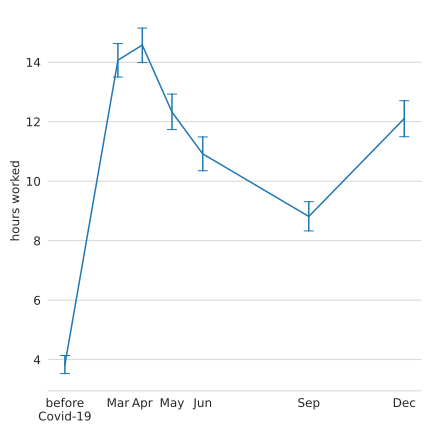
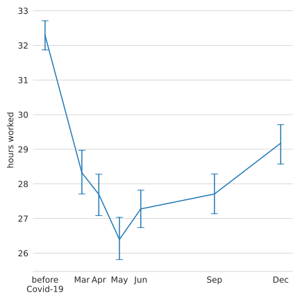
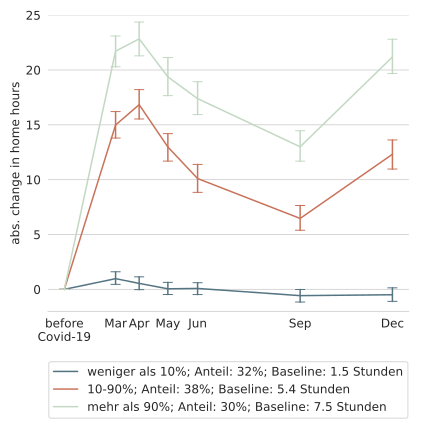
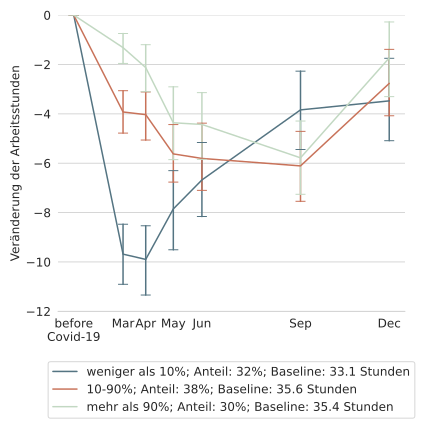
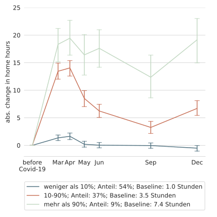
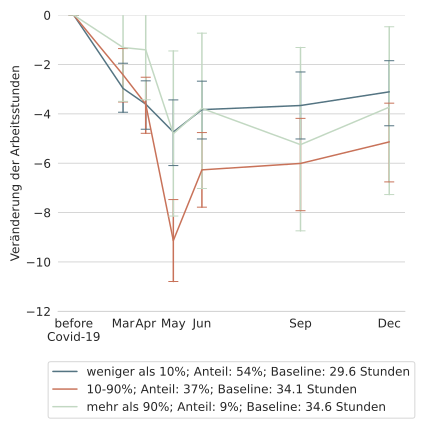

Home Office während der CoVid-19 Pandemie??
Christian Zimpelmann
CoViD-19 Impact Lab
- Gruppe von Wissenschaftler:innen des IZA und der Universitäten Bonn, Mannheim, Tilburg
- Impuls: Pandemie wirtschafts- und sozialwissenschaftlich begleiten
LISS Panel
- Panel: Dieselben Personen / Haushalte werden immer wieder befragt
- Online, läuft seit 2007
- Wahrscheinlichkeitsbasierte Stichprobe, ~7000 Personen
- Reichhaltige Hintergrunddaten
Eigene Datenerhebung
- 6 Wellen von Ende März bis Mitte Dezember
- Arbeitsstunden zu Hause und am Arbeitsplatz
- Berufsmerkmale: Möglichkeit von zu Hause zu arbeiten; Systemrelevanz der Tätigkeit
- Erwartungen
- …
Arbeitsplätze


Arbeitsstunden
- Wir betrachten unbedingte Arbeitsstunden (im Home Office und am Arbeitsplatz)
 
Vergleich Dez vs Mär/Apr
- 52% vs 57% mindestens 1h im HO
- 73% vs 80% der Stunden im HO (geg. mindestens 1h)
Möglichkeit auf Home Office
 
Systemrelevanz
 
Wer kann von zu Hause arbeiten?
Entwicklung HO nach Corona?
- Vor Corona: 3,8h im HO
- Nach Corona erwartet: 8h im HO
- Nach Corona erwünscht: 9h im HO